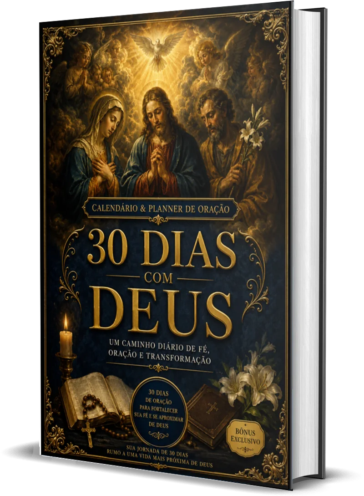
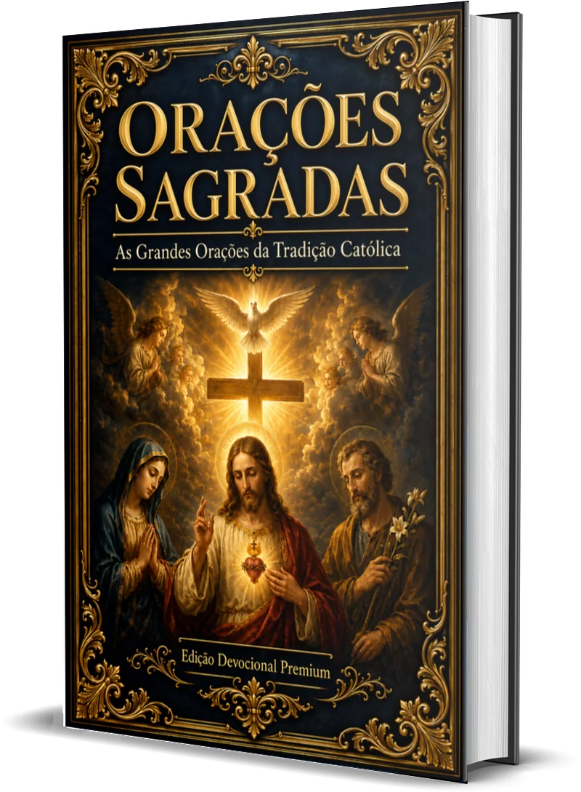
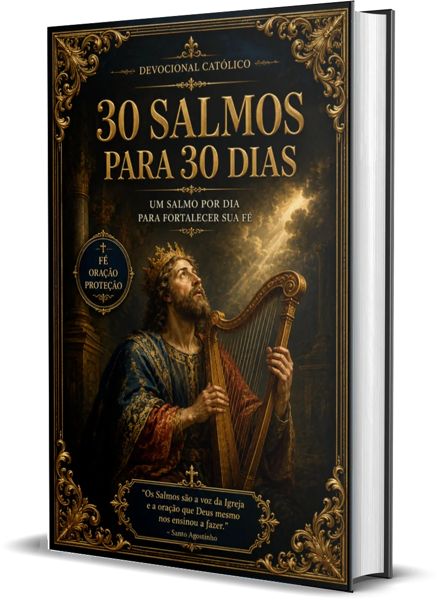

✦
Mais constância
Use a proposta de 30 dias como apoio para reservar um momento diário de oração.
Coleção devocional católica • 4 livros digitais
A Coleção Caminho de Fé reúne orações tradicionais, salmos, mensagens e um planner devocional para quem deseja cultivar uma vida mais próxima de Deus.
Acesso digital pela Cakto • Pagamento seguro • Garantia de 7 dias
Sua rotina espiritual
A fé não precisa ficar limitada aos momentos difíceis. Com materiais organizados, você pode reservar alguns minutos por dia para ler, rezar e refletir com mais clareza.

Um caminho organizado
Quando todo o conteúdo está espalhado, manter uma rotina pode parecer mais difícil. A Coleção Caminho de Fé reúne quatro propostas complementares: orações tradicionais, salmos para 30 dias, um calendário e planner de oração e mensagens de fé para diferentes momentos.
Você escolhe como começar e avança no seu ritmo. Pode acompanhar a sequência de 30 dias, consultar uma oração específica ou abrir uma mensagem quando sentir necessidade de reflexão.
É uma coleção prática e visual, criada para estar perto de você durante a sua caminhada espiritual.
QUERO MINHA COLEÇÃO AGORAO que a coleção favorece
Use a proposta de 30 dias como apoio para reservar um momento diário de oração.
Tenha grandes orações da tradição católica organizadas em uma edição devocional.
Encontre mensagens e orações para fortalecer a fé, a família e a esperança.
Acompanhe um salmo por dia, sem precisar decidir a cada momento o que ler.
Crie pequenas pausas de silêncio e presença em meio à rotina.
Leve os quatro PDFs com você e leia em diferentes dispositivos compatíveis.
O que você vai receber
Cada volume cumpre um papel próprio e, juntos, formam uma companhia devocional para diferentes dias e necessidades.

Uma edição devocional com grandes orações da tradição católica para consulta e oração pessoal.

Um salmo por dia em uma jornada voltada à fé, à oração e à proteção.
Calendário e planner de oração para apoiar uma caminhada diária mais organizada.
50 orações cristãs inspiradas na Bíblia para fortalecer a fé, a família e a esperança.
Apresentação premium
As capas verdadeiras mostram a unidade visual da coleção: arte sacra, dourado clássico e uma atmosfera de recolhimento.
Escolha consciente

Sobre o autor
J. Barreto assina a Coleção Caminho de Fé, reunindo quatro materiais devocionais em uma proposta visualmente coerente e de uso simples.
A apresentação desta página mostra exatamente os quatro títulos incluídos, sem avaliações fictícias ou promessas de transformação garantida. Você sabe o que receberá antes de decidir.
Oferta completa
Pagamento único
R$ 47,00
Parcelamento disponível conforme as condições apresentadas pela Cakto.
QUERO MINHA COLEÇÃO AGORA4 livros digitais em PDF • Acesso pela Cakto • Garantia de 7 dias
Dúvidas frequentes
Assim que o pagamento for confirmado, você recebe um e-mail da Cakto com seu acesso à área de leitura. Lá dentro os quatro livros aparecem um embaixo do outro, e você clica em cada um para baixar. Não é preciso descompactar nada nem instalar programa algum.
É uma coleção 100% digital. Não há envio de livros impressos pelos Correios.
Sim. Os arquivos estão em formato PDF e podem ser abertos em celular, tablet ou computador com um leitor compatível.
Seu acesso à área de leitura fica disponível e você pode baixar os quatro PDFs quantas vezes quiser. Depois de baixados, os arquivos ficam salvos no seu aparelho e são seus para sempre.
Pix e cartão de crédito. As condições de parcelamento aparecem no checkout seguro da Cakto antes de você concluir a compra.
Você terá 7 dias de garantia, conforme as condições informadas no momento da compra.
Envie sua mensagem para mergulhodigital01@gmail.com.
Seu próximo momento de oração pode começar aqui
Receba os quatro livros digitais e escolha a leitura que melhor acolhe o seu momento.
R$ 47,00
QUERO MINHA COLEÇÃO AGORACompra segura • Produto digital • Suporte por e-mail